The pokemon anime is one of the most popular anime series ever, and is watched by fans in over 98 different countries around the world. The first episode of the pokemon anime was aired on April 1st 1997, and the the anime is still going to this day. All of the pokemon anime, including films and specials, fit into six chronological sequenced series, the original series, Advanced Generation, Diamond & Pearl, Best Wishes!, XY and the current Sun and Moon. Each of these series are divided into chapters, which are even further divided into different seasons, totalling at 20 different seasons of pokemon.
The original series consists of three chapters starting with the Kanto chapter. There is only one season in the Kanto Chapter, The Indigo League. This season follows the hero of the show, young Ash Ketchum as he gets his very first pokemon, Pikachu and starts on his journey to become a Pokemon Master. The second chapter is the Orange Islands Chapter. There is only one season in the Orange Islands chapter which is the the Adventures on the Orange Islands. The Adventures on the Orange Islands take place after Ash leaves from the Pokemon League. They follow Ash and his friends as they go the the Orange Islands on a mission to retrieve the rare GS Ball for Professor Oak. Ash ends up deciding to take on the Orange League before returning back to the Kanto Region. The Johto chapter has three seasons the Johto Journeys, the Johto League Champions and Master Quest. The Johto Journeys follow Ash and his friends as Ash signs up to compete in the Johto League and once again has to stop Team Rockets Evil plans. The Johto League Champions follows as Ash continues to collect the Gym Badges from all 8 gyms. In Master Quest it follows as Ash finds himself on the Whirl Islands and ends up taking a break from his Johto league mission to participate in the Whirl Cup, and gets caught up with the mysterious Legendary Pokemon that makes its home in the Whirl Islands, Lugia! Ash helps save the baby Lugia and its Mother. Finally after saving the Lugia Ash heads back to continue his journey to hopefully win the Johto League. Aside from the main anime, there are 19 different movies from all the six generations, four of which take place in the Original Series timeline. The first movie is called Mewtwo strikes back, and features the powerful Legendary pokemon Mewtwo and the Mythical pokemon its DNA was based on, Mew. The second movie is The Power of One which features the Legendary Birds, Moltres, Articuno and Zapdos, and their Trio Master Lugia. Trio Master is a term used to identify the leader of a trio of legendary pokemon, with the Trio Master either being part of, or seperate from that trio. There are 7 Legendary Trios, and six trio masters. The first Legendary Trio are the Legendary Birds, Moltres, Articuno and Zapdos, with their Trio Master Lugia. The second Legendary Trio is the Legendary Beasts, Raikou, Entei and Suicune, with their Trio Master Ho-Oh. The Third Legendary Trio are the Weather Trio, Kyogre, Groudon and Rayquaza, with the Trio Master being Rayquaza.The Fourth Legendary Trio is the Regi Trio, Regice, Regirock and Registeel, with the Trio Master being Regigigas. The Fifth Legendary Trio are the Creation Trio, Dialga, Palkia, and Giratina, with the Trio Master being Arceus the god of all pokemon. The Sixth Legendary Trio are the Lake Trio, Mesprit, Azelf and Uxie, with the Trio Master also being Arceus the god of all pokemon. The Seventh Legendary Trio are the Legendary Genies, Thundurus, Tornadus and Landorus, with the Trio Master being Landorus. The third movie is Spell of the Unown which features the Legendary Beast Entei, and the very mysterious pokemon, also referred to as the tools of god(Arceus) the Unown. The Fourth Movie is Celebi: The Voice of the Forest, which features the Legendary Beast, Suicune and the Mythical Pokemon Celebi.
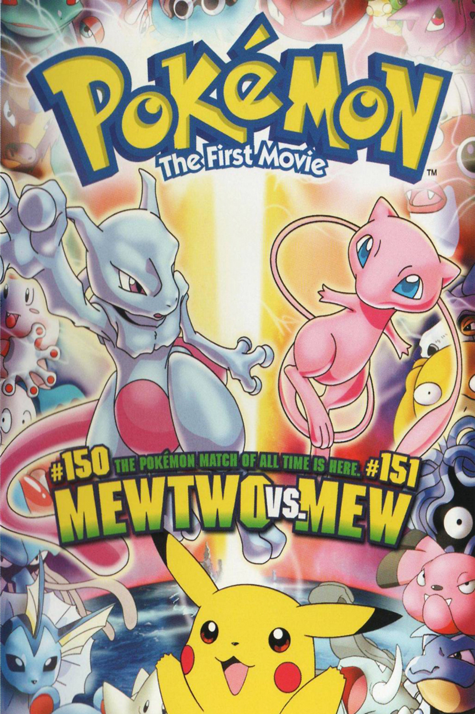 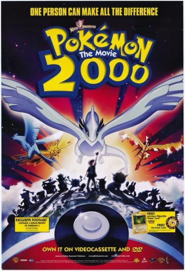 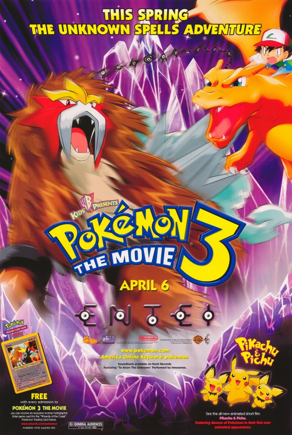 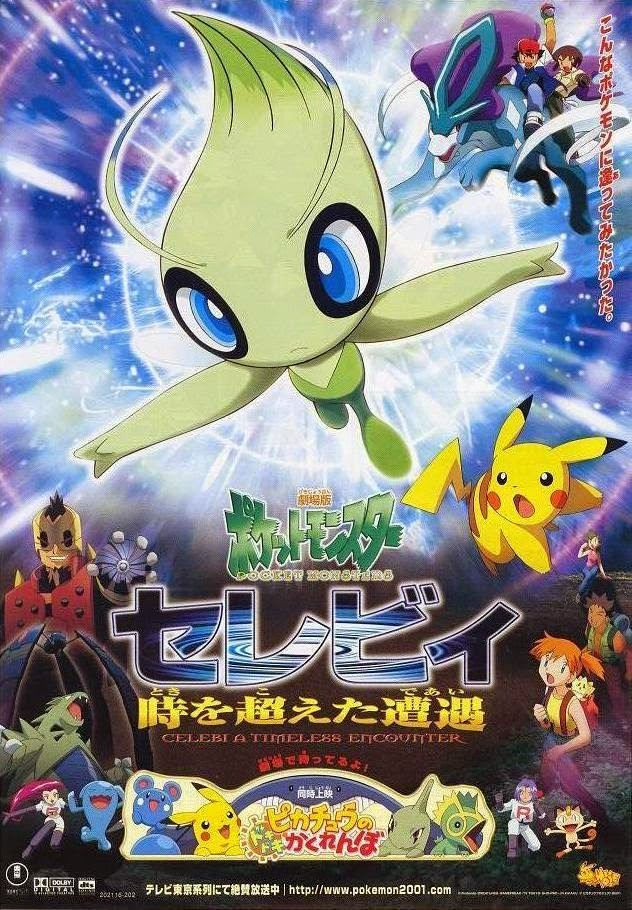Advanced Generation is the second of the six series in the Pokemon Anime. Advanced Generation consists of two chapters with a total of 4 seasons. The first chapter consists of three seasons, the first being Advanced. The beginning of the season starts when Ash gets to Littleroot Town and he asks Professor Birch to help him with a problem Pikachu is having. From there Ash meets fellow trainer May and her little brother Max and go on an adventure through the Hoenn region. The second season, Advanced Challenge, follows as Ash meets up with old friend Misty and continues on his journey throughout the Hoenn region collecting badges and making new friends. The third season, Advanced Battle continues Ash’s season continues his journey throughout the Hoenn Region and ends up making it to the Pokemon League. After an interesting battle there, he heads back and decides to challenge the Battle Frontier. The Second chapter, The Battle Frontier chapter has one season, Battle Frontier. Battle Frontier follows Ash as he challenges and completes all the frontiers in the Battle Frontier. Just like the Original series, Advanced Generation also has multiple movies in its timeline. The first movie is Pokemon Heroes: Latios and Latias, featuring the Legendary Pokemon Latios and Latias. The second movie is Jirachi Wish Maker featuring the Mythical pokemon Jirachi, and the Legendary Pokemon Groudon. The third movie is Destiny Deoxys featuring the Legendary Pokemon from space Deoxys, and the Legendary Pokemon Rayquaza. The fourth movie is Lucario and the Mystery of Mew featuring the Legendary pokemon of the Regi Trio, the Mythical Pokemon Mew, and Lucario. The fifth movie is Pokemon Ranger and the Temple of the Sea, featuring the Mythical Pokemon Manaphy and the Legendary Pokemon Kyogre.
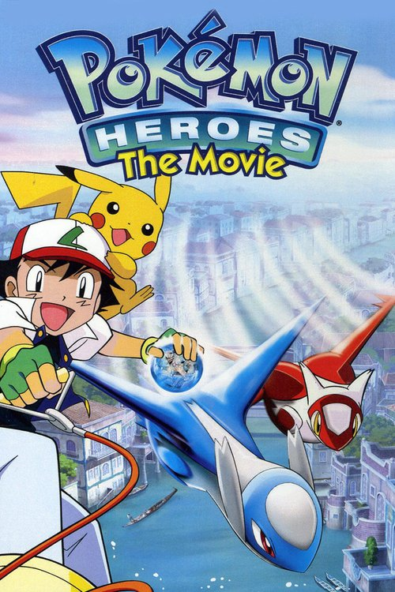 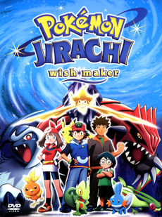 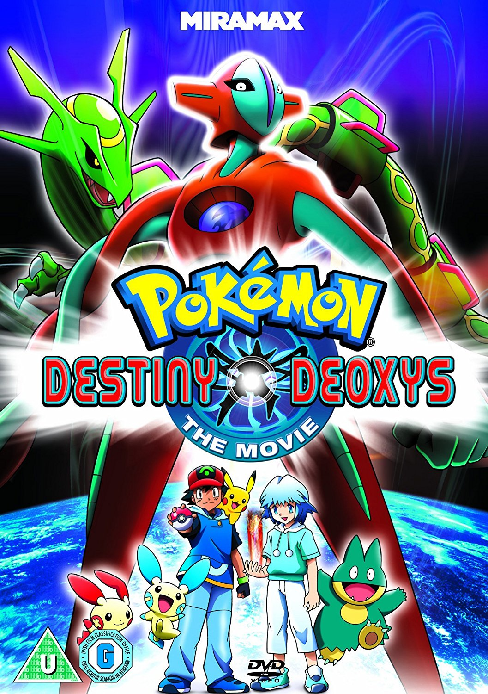 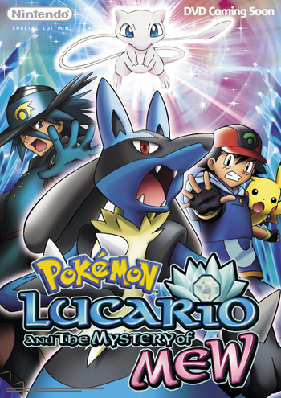 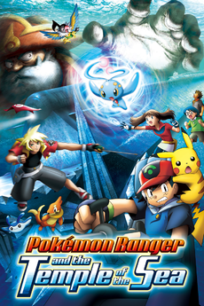Diamond & Pearl is the only series with no chapters, and instead consists of four seasons. The first season, Diamond and Pearl follows Ash as he continues on his pokemon journey with his best friend Brock, and meets Dawn an aspiring Pokemon Coordinator who accompanies them on their journey, as this time Ash attempts to challenge the Sinnoh League. The second season Diamond and Pearl: Battle Dimension, follows Ash and the gang as he continues to battle the gyms in the Sinnoh region, fights Team Galactic, and help out people along the way, like the Pokemon Rangers. The third season Diamond and Pearl:Galactic Battles, follows Ash and the gang as he obtain his seventh gym badge and has to stop the evil Team Galactic, as they have captured the Legendary Lake Trio and have planned to do something evil with them. The fourth season Diamond and Pearl: Sinnoh League Victors follows Ash and the gang as he finally obtains his eighth gym badge and makes it up to the semifinals of the Pokemon League where he loses to the powerful trainer Tobias. Tobias made it all the way to the semifinals using only one pokemon, the Legendary Pokemon Darkrai. Ash is the first and only trainer to defeat his Darkrai, but Tobias has yet another Legendary Pokemon Latios, and so in the end Ash was defeated, and Tobias continued on to the finals and won, using only his Darkrai, in the end only revealing two of his six pokemon. In the Diamond and Pearl timeline there are three pokemon movies, starting with the Rise of Darkrai, featuring the Legendary Pokemon, Dialga, Palkia and Darkrai. The Second Movie is Giratina and the Sky Warrior, featuring the Legendary Pokemon Giratina, Regigigas, Dialga and the Mythical Pokemon Shaymin. The Third Movie is Arceus and the Jewel of Life featuring the Legendary Creation Trio and the god of all pokemon Arceus, and the Legendary Pokemon Heatran.
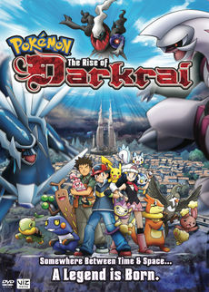 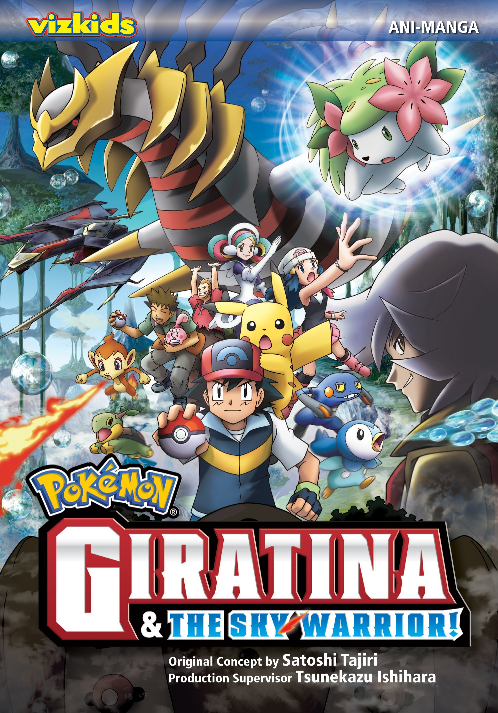 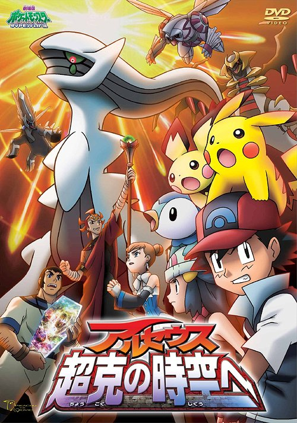The Best Wishes! Series consists of four chapters each with one season respectively. The first chapter Best Wishes! has one season Black and White and follows Ash, Iris and the Pokemon Connoisseur Cilan as they go on an adventure to obtain all of the Unova region badges. The second chapter is Best Wishes! 2 and the second season is Black and White: Rival Destinies and follows Ash and the gang as he challenges his fourth gym, and meets many people as he continues to collect badges, like the Champion Alder, and is reunited with an old friend Cynthia the Sinnoh region Champion and Dawn. The third chapter is Best Wishes! Episode N and the third season is Black and White: Adventures in Unova follows Ash and the gang as they meet N, learn about the Legendary Pokemon and find out what Team Plasma plans to do with them. After Ash is defeated in the Pokemon League he meets N at the White Ruins dedicated to the Legendary Pokemon Reshiram, and finds out that Colress from Team Plasma has created a machine to control dragon types and tests it on Iris’ Haxorus. Team Plasma get their hands on the White Stone, the resting form of Reshiram and summon and control it using the machine made by Colress. After Ash and the Gang destroy the machine it is up to N to calm an enraged Reshiram as he is a direct descendant of the one who Reshiram chose to be its trainer. The fourth chapter is Best Wishes! Decolora Adventure and the fourth season is Black and White:Adventures in Unova and Beyond and follows Ash and the gang as he goes back to Kanto but ends up stopping at the Decolora Islands on the way. In the Best Wishes! Series there are three movies, and two versions of one of them. The first movie is Zoroark Master of Illusions and features the Legendary Beast Trio, the Mythical Pokemon Celebi, Zorua and its evolution Zoroark. The second movie has two versions, White: Victini and Zekrom and Black: Victini and Reshiram. The plots of the movies are similar except that in one movie Reshiram is in the castle and Zekrom is brought to battle it, and in the other movie Zekrom is in the castle and Reshiram is brought to battle it. The third movie is Kyurem and the Sword of Justice which features the Legendary Sword of Justice, with Terrakion, Cobalion, Virizion and the younger Keldeo, and the antagonist the Legendary Pokemon Kyurem.
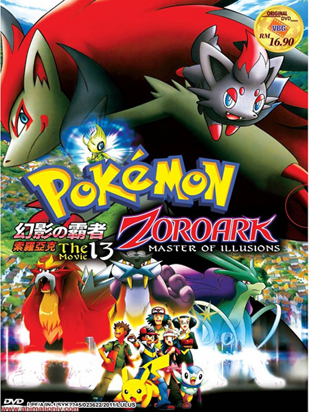 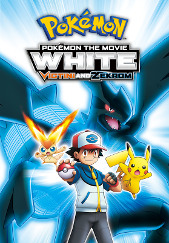 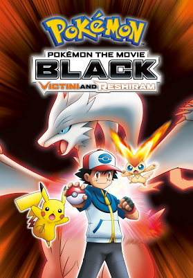 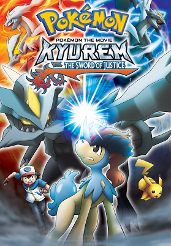The XY series consists of two chapters, XY and XYZ. XY consists of two seasons the first being XY. XY starts when gets to the Kalos region and starts his pokemon journey with his new friends, Gym Leader Clemont, and his sister Bonnie as he journeys to collect all eight of the regions Gym Badges. The second season, Kalos Quest follows Ash as he is reunited with his friend Serena and continues on his adventure to beat all the Gyms. He also meets with the Hoenn Champion Steven, discovers Mega Evolution and assists Steven in saving the world by stopping an intense battle between the mighty Legendary Weather Trio. The third chapter XYZ has one season XYZ. XYZ starts when the gang meets a Zygarde Cell, a part of the Legendary Pokemon Zygarde, named Squishy which joins them on their Journey. Ash goes on to compete in the Kalos Pokemon League and runs into Team Flare who have controlled a different Zygarde called Z2 and plan on destroying the world. When the only solution to saving the world is defeating Z2 Squishy reveals its identity as Zygarde and transforms into its 50% stage to fight Z2 and is eventually put under the same control as Z2. When all hope seemed gone Bonnie managed to reach through to Squishy and both Zygarde’s were released from Team Flare control. When everything seemed to be fixed, a giant clone of Zygarde created from ancient Anistar magic was released on the world. When all the Gym Leaders and trainers they could find were unable to defeat the Megalith Zygarde it was up to Squishy and Z2 to combine with each other and every other Zygarde Cell to form the Guardian of the Earth, the powerful Zygarde 100% form, who defeated the Megalith and returned the world to its former health. Finally Ash’s Kalos Journey was over and had to part ways with all his comrades he’d formed strong bonds with and spent a long time sharing his feelings and saying goodbye. In the XY series there are four movies. The first is Genesect and the Legend Awakened featuring the Legendary Pokemon Genesect, and the powerful Mega Y form of the Legendary Pokemon Mewtwo. The second is Diancie and the Cocoon of Destruction featuring the Legendary Pokemon of Life, Xerneas, its counterpart the Legendary Pokemon of Death Yveltal, and the Legendary Pokemon Diancie. The third is Hoopa and the Clash of ages which features the mischievous Hoopa, and the Legendary Pokemon, Kyogre, Groudon, Rayquaza, Lugia, Latios, Latias, Kyurem, Dialga, Palkia, Giratina, Regigigas, and the god of all Pokemon, Arceus. The fourth and final XY movie is Volcanion the Mechanical Marvel, featuring the Legendary Pokemon Volcanion, Magearna and Zygarde.
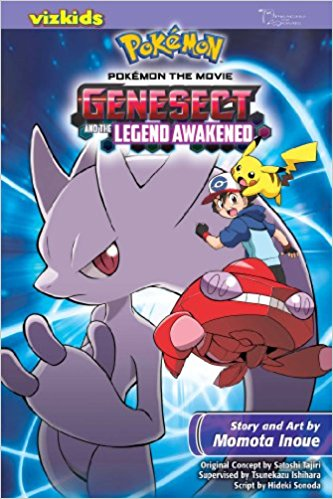 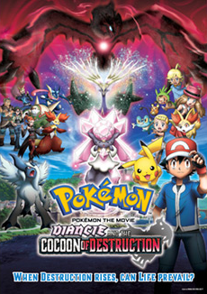 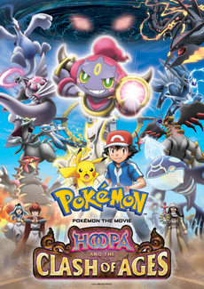 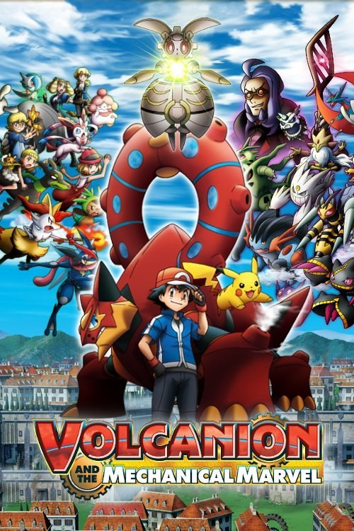The Sun and Moon anime is in its first Season and has only recently started airing. There is one Sun and Moon timeline movie that has been released, which is a re-imagining of the first few episodes of the Pokemon Anime featuring the Legendary Pokemon, Ho-Oh and Marshadow.
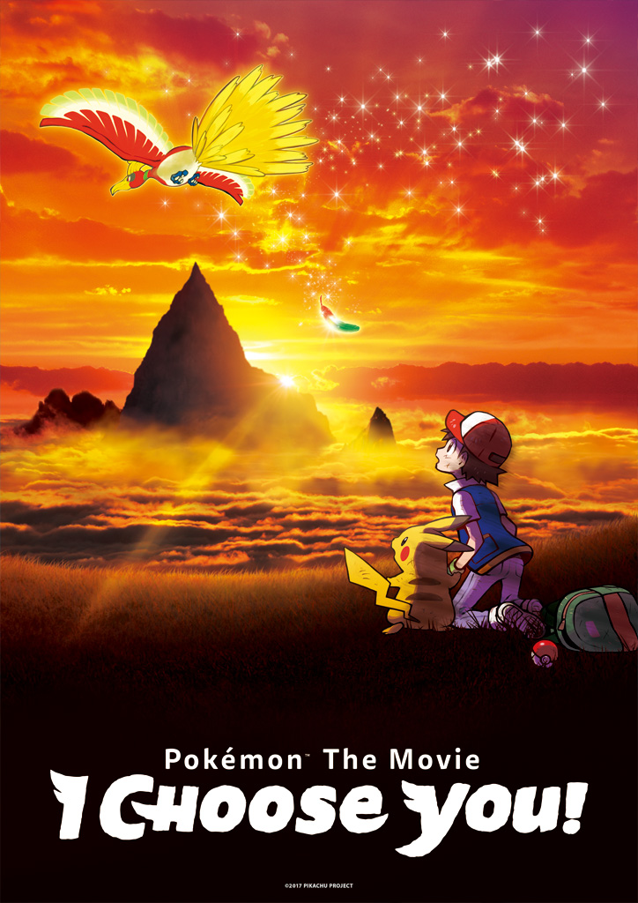